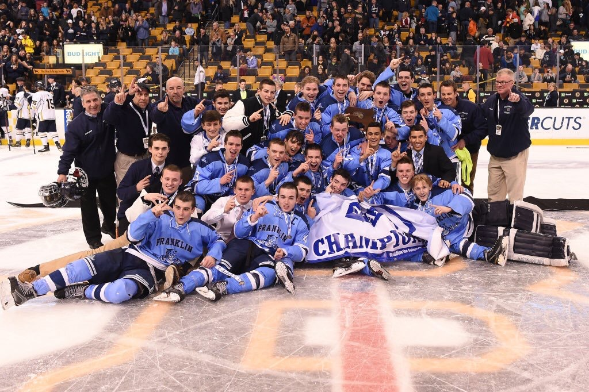
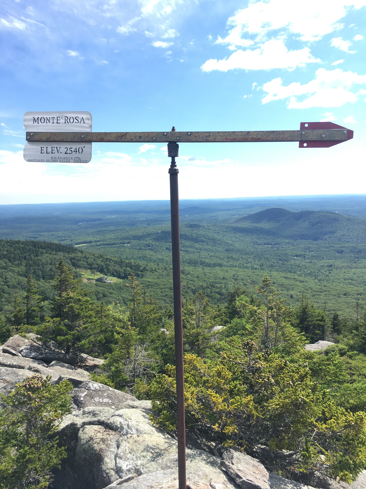

During my free time I often like to do activities and such that interest me. Hockey is one of my biggest hobbies, I love playing the game and watching it. This year at UMaine, I was luck enough to earn a spot on the club hockey team. I also like to participate in other sports such as baseball and disc golf. My other major interest besides sports is the outdoors. I love to go hiking or being on the water in a kayak, whether with my friends or by myself enjoying the peace. I did this often during the summer at my lake house and hope to continue the outdoor fun with landmarks such as Acadia National Park and Stillwater River.
 